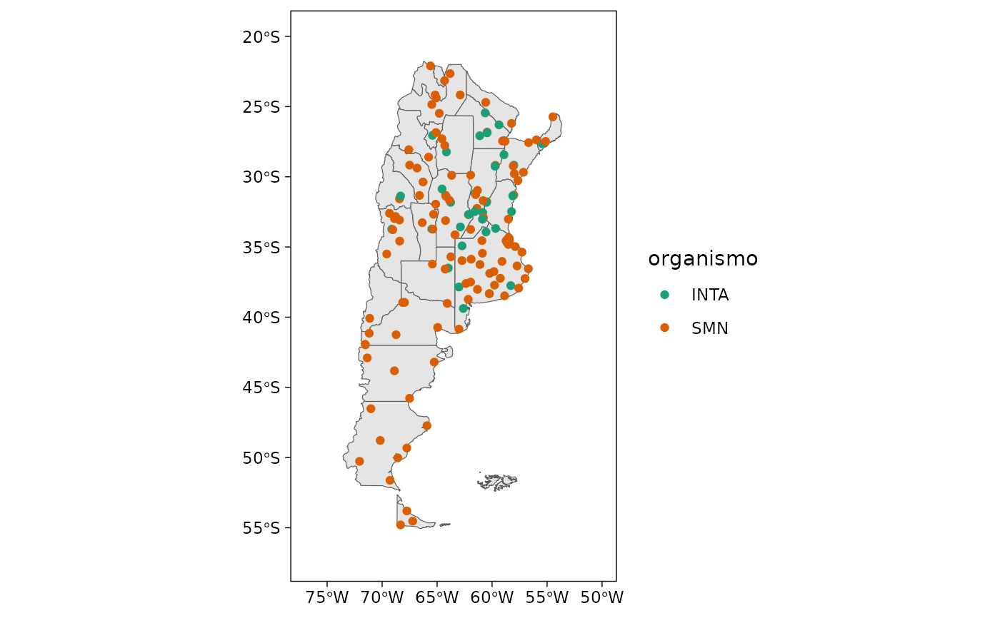

Devuelve los metadatos de estaciones incluyendo el código único, ubicación (latitud y longitud) y el nombre.
Argumentos
- codigo, provincia, organismo
carácter o vector de caracteres para filtrar según código de estación, provincia o provincia.
- lat
vector numérico con las latitudes límite de la región de interés.
- lon
vector numérico con las longitudes límite de la región de interés (entre -180 y 180).
Detalles
Esta función por defecto devuelve la lista completa de estaciones pero alternativamente se puede devolver estaciones especificar a partir de sus códigos o todas las estaciones incluidas en una región. Además incluye un método plot para visualizar rápidamente la ubicación de las estaciones.
Ejemplos
# listado completo de estaciones
metadatos_nh()
#> codigo_nh estacion provincia organismo lat lon
#> 1 0446 Anguil La Pampa INTA -36.50 -63.98
#> 2 0196 Azul Buenos Aires SMN -36.75 -59.83
#> 3 0221 Bahía Blanca Buenos Aires SMN -38.73 -62.17
#> 4 0400 Balcarce Buenos Aires INTA -37.75 -58.30
#> 5 0323 Bariloche Río Negro SMN -41.15 -71.17
#> 6 0216 Barrow Buenos Aires INTA -38.32 -60.25
#> 7 0067 Bella Vista Corrientes INTA -28.43 -58.92
#> 8 0008 Benito Juárez Buenos Aires SMN -37.72 -59.78
#> 9 0189 Bolívar Buenos Aires SMN -36.25 -61.10
#> 10 0343 Bordenave Buenos Aires INTA -37.85 -63.02
#> 11 0997 Canals Córdoba INTA -33.57 -62.88
#> 12 0358 Castelar Buenos Aires INTA -34.67 -58.65
#> 13 0988 Castelli,J.J. Chaco INTA -25.45 -60.63
#> 14 0044 Catamarca Catamarca SMN -28.60 -65.77
#> 15 0081 Ceres Santa Fe SMN -29.88 -61.95
#> 16 0423 Cerro Azul Misiones INTA -27.65 -55.43
#> 17 0226 Cipolleti-I Río Negro SMN -38.95 -67.98
#> 18 0163 Cipolleti Río Negro SMN -38.95 -67.97
#> 19 0487 Colonia Benítez Chaco INTA -27.42 -58.93
#> 20 0270 Comodoro Rivadavia Chubut SMN -45.78 -67.50
#> 21 0497 Conc. del Uruguay Entre Ríos INTA -32.48 -58.23
#> 22 0477 Concordia Entre Ríos SMN -31.30 -58.02
#> 23 0496 Concordia Entre Ríos INTA -31.36 -58.12
#> 24 0100 Córdoba Córdoba SMN -31.32 -64.22
#> 25 0105 Córdoba-Obs Córdoba SMN -31.40 -64.18
#> 26 0204 Coronel Suárez Buenos Aires SMN -37.50 -61.95
#> 27 0390 Coronel Pringles Buenos Aires SMN -38.02 -61.33
#> 28 0470 Corrientes Corrientes SMN -27.47 -58.82
#> 29 0080 Curuzu Cuatia Corrientes SMN -29.78 -57.98
#> 30 0454 Chacras de Coria Mendoza SMN -32.98 -68.87
#> 31 0476 Chamical La Rioja SMN -30.37 -66.28
#> 32 0525 Chapelco Neuquén SMN -40.08 -71.13
#> 33 0102 Chepes La Rioja SMN -31.33 -66.60
#> 34 0031 Chilecito La Rioja SMN -29.17 -67.50
#> 35 0190 Dolores Buenos Aires SMN -36.35 -57.73
#> 36 0478 Don Torcuato Buenos Aires SMN -34.48 -58.62
#> 37 0158 El Bolsón Río Negro SMN -41.97 -71.52
#> 38 0350 El Bolsón Río Negro SMN -41.93 -71.55
#> 39 0464 El Colorado Formosa INTA -26.30 -59.37
#> 40 0552 El Trebol Santa Fe SMN -32.25 -61.38
#> 41 0571 El Calafate Santa Cruz SMN -50.27 -72.05
#> 42 0159 El Palomar Buenos Aires SMN -34.60 -58.60
#> 43 0303 Esquel Chubut SMN -42.90 -71.35
#> 44 0166 Ezeiza Buenos Aires SMN -34.82 -58.53
#> 45 0444 Famaillá Tucumán INTA -27.05 -65.42
#> 46 0483 Formosa Formosa SMN -26.20 -58.23
#> 47 0334 General Pico La Pampa SMN -35.70 -63.75
#> 48 0038 General Villegas Buenos Aires INTA -34.92 -62.73
#> 49 0283 Gobernador Gregores Santa Cruz SMN -48.78 -70.17
#> 50 0134 Gualeguaychú Entre Ríos SMN -33.02 -58.52
#> 51 0421 Hilario Ascasubi Buenos Aires INTA -39.38 -62.62
#> 52 0353 Iguazú Misiones SMN -25.73 -54.47
#> 53 0500 Jujuy Jujuy SMN -24.38 -65.08
#> 54 0543 Jujuy-UN Jujuy SMN -24.17 -65.18
#> 55 0453 Junín Buenos Aires SMN -34.55 -60.92
#> 56 0148 Laboulaye Córdoba SMN -34.13 -63.37
#> 57 0442 La Consulta Mendoza INTA -33.73 -69.12
#> 58 0550 La María Santiago del Estero INTA -28.23 -64.15
#> 59 0450 La Plata Buenos Aires SMN -34.97 -57.90
#> 60 0001 La Quiaca Jujuy SMN -22.10 -65.60
#> 61 0077 La Rioja La Rioja SMN -29.38 -66.82
#> 62 0416 Las Breñas Chaco INTA -27.08 -61.12
#> 63 0186 Las Flores Buenos Aires SMN -36.03 -59.10
#> 64 0011 Las Lomitas Formosa SMN -24.70 -60.58
#> 65 0910 Las Rosas Santa Fe INTA -32.48 -61.57
#> 66 0179 Malargüe Mendoza SMN -35.50 -69.58
#> 67 0438 Manfredi Córdoba INTA -31.82 -63.77
#> 68 0248 Maquinchao Río Negro SMN -41.25 -68.73
#> 69 0369 Marcos Juárez Córdoba SMN -32.70 -62.15
#> 70 0502 Marcos Juárez Córdoba INTA -32.68 -62.12
#> 71 0524 Mariano Moreno Buenos Aires SMN -34.33 -58.49
#> 72 0210 Mar del Plata Buenos Aires SMN -37.93 -57.58
#> 73 0131 Mendoza Mendoza SMN -32.83 -68.78
#> 74 0132 Mendoza-obs Mendoza SMN -32.88 -68.85
#> 75 0498 Mercedes Corrientes INTA -29.17 -58.02
#> 76 0165 Merlo Buenos Aires SMN -34.41 -58.44
#> 77 0021 Metán Salta SMN -25.48 -64.80
#> 78 0087 Monte Caseros Corrientes SMN -30.27 -57.65
#> 79 0164 Morón Buenos Aires SMN -34.67 -58.63
#> 80 0441 Necochea Buenos Aires SMN -38.48 -58.86
#> 81 0227 Neuquén Neuquén SMN -38.95 -68.13
#> 82 0178 Nueve de Julio Buenos Aires SMN -35.45 -60.88
#> 83 0057 Oberá Corrientes SMN -27.48 -55.13
#> 84 0531 Olavarría Buenos Aires SMN -36.88 -60.22
#> 85 0472 Oliveros Santa Fe INTA -32.55 -60.85
#> 86 0339 Orán Salta SMN -23.15 -64.32
#> 87 0113 Paraná Entre Ríos SMN -31.78 -60.48
#> 88 0114 Paraná Entre Ríos INTA -31.83 -60.52
#> 89 0307 Paso de Indios Chubut SMN -43.82 -68.88
#> 90 0346 Paso de los Libres Corrientes SMN -29.68 -57.15
#> 91 0456 Pehuajó Buenos Aires SMN -35.87 -61.90
#> 92 0145 Pergamino Buenos Aires INTA -33.93 -60.55
#> 93 0272 Perito Moreno Santa Cruz SMN -46.52 -71.02
#> 94 0206 Pigüé Buenos Aires SMN -37.60 -62.38
#> 95 0111 Pilar Córdoba SMN -31.67 -63.88
#> 96 0362 Posadas Misiones SMN -27.37 -55.97
#> 97 0280 Puerto Deseado Santa Cruz SMN -47.73 -65.92
#> 98 0177 Punta Indio Buenos Aires SMN -35.37 -57.28
#> 99 0098 Rafaela Santa Fe INTA -31.18 -61.55
#> 100 0309 Reconquista Santa Fe SMN -29.18 -59.70
#> 101 0437 Reconquista Santa Fe INTA -29.25 -59.73
#> 102 0489 Resistencia Chaco SMN -27.45 -59.05
#> 103 0229 Río Colorado Río Negro SMN -39.02 -64.08
#> 104 0138 Río Cuarto Córdoba SMN -33.12 -64.23
#> 105 0293 Río Gallegos Santa Cruz SMN -51.62 -69.28
#> 106 0296 Río Grande Tierra del Fuego SMN -53.80 -67.75
#> 107 0458 Río Hondo Santiago del Estero SMN -27.29 -64.56
#> 108 0006 Rivadavia Salta SMN -24.17 -62.90
#> 109 0034 P. Roque Saenz Peña Chaco SMN -26.82 -60.45
#> 110 0415 P. Roque Saenz Peña Chaco INTA -26.87 -60.45
#> 111 0133 Rosario Santa Fe SMN -32.92 -60.78
#> 112 0012 Salta Salta SMN -24.85 -65.48
#> 113 0241 San Antonio Oeste Río Negro SMN -40.73 -64.95
#> 114 0143 San Carlos Mendoza SMN -33.77 -69.03
#> 115 0553 San Fernando Buenos Aires SMN -34.45 -58.58
#> 116 0495 San Juan San Juan SMN -31.57 -68.42
#> 117 0445 San Juan San Juan INTA -31.37 -68.32
#> 118 0285 San Julian Santa Cruz SMN -49.32 -67.75
#> 119 0139 San Luis San Luis SMN -33.27 -66.35
#> 120 0370 San Martin-Mza. Mendoza SMN -33.08 -68.42
#> 121 0154 San Miguel Buenos Aires SMN -34.55 -58.73
#> 122 0492 San Pedro Buenos Aires INTA -33.68 -59.68
#> 123 0325 San Rafael Mendoza SMN -34.58 -68.40
#> 124 0289 Santa Cruz Santa Cruz SMN -50.02 -68.57
#> 125 0192 Santa Rosa La Pampa SMN -36.57 -64.27
#> 126 0572 Santa Rosa de Conlara San Luis SMN -32.67 -65.32
#> 127 0547 Santa Teresita Buenos Aires SMN -36.55 -56.70
#> 128 0062 Santiago del Estero Santiago del Estero SMN -27.77 -64.30
#> 129 0451 Sauce Viejo Santa Fe SMN -31.70 -60.82
#> 130 0311 Tandil Buenos Aires SMN -37.23 -59.25
#> 131 0326 Tartagal Salta SMN -22.65 -63.82
#> 132 0065 Tinogasta Catamarca SMN -28.07 -67.57
#> 133 0558 Tolhuin Tierra del Fuego SMN -54.53 -67.22
#> 134 0258 Trelew Chubut SMN -43.20 -65.26
#> 135 0185 Trenque Lauquen Buenos Aires SMN -35.97 -62.74
#> 136 0490 Tres Arroyos Buenos Aires SMN -38.33 -60.25
#> 137 0017 Tucumán Tucumán SMN -26.85 -65.10
#> 138 0298 Ushuaia Tierra del Fuego SMN -54.80 -68.32
#> 139 0308 Uspallata Mendoza SMN -32.60 -69.33
#> 140 0551 Venado Tuerto Santa Fe SMN -33.75 -61.95
#> 141 0188 Victorica La Pampa SMN -36.22 -65.43
#> 142 0501 Viedma Río Negro SMN -40.85 -63.02
#> 143 0117 Villa Dolores Córdoba SMN -31.95 -65.13
#> 144 0013 Villa Gesell Buenos Aires SMN -37.25 -57.00
#> 145 0082 V.Maria del Río Seco Córdoba SMN -29.90 -63.68
#> 146 0439 Villa Mercedes San Luis INTA -33.72 -65.48
#> 147 0156 V.Ortuzar Buenos Aires SMN -34.58 -58.48
#> 148 0335 Villa Reynolds San Luis SMN -33.73 -65.38
#> 149 0522 Yaciretá Corrientes SMN -27.57 -56.68
#> 150 0046 Zavalla-Univ. Santa Fe INTA -33.02 -60.88
#> 151 0075 Mercedes Corrientes SMN -29.23 -58.08
#> 152 0573 Rafaela Santa Fe SMN -31.27 -61.50
#> 153 0574 Sunchales Santa Fe SMN -30.97 -61.33
#> 154 0989 Capilla del Monte Córdoba INTA -30.87 -64.55
#> 155 0332 Buenos Aires Buenos Aires SMN -34.57 -58.42
#> altura
#> 1 165
#> 2 132
#> 3 83
#> 4 130
#> 5 840
#> 6 120
#> 7 70
#> 8 207
#> 9 93
#> 10 212
#> 11 NA
#> 12 22
#> 13 NA
#> 14 454
#> 15 88
#> 16 270
#> 17 265
#> 18 265
#> 19 54
#> 20 46
#> 21 21
#> 22 38
#> 23 48
#> 24 474
#> 25 425
#> 26 234
#> 27 247
#> 28 62
#> 29 73
#> 30 921
#> 31 461
#> 32 779
#> 33 658
#> 34 945
#> 35 9
#> 36 4
#> 37 337
#> 38 310
#> 39 78
#> 40 96
#> 41 204
#> 42 12
#> 43 787
#> 44 20
#> 45 363
#> 46 60
#> 47 145
#> 48 117
#> 49 357
#> 50 21
#> 51 22
#> 52 270
#> 53 905
#> 54 1302
#> 55 81
#> 56 137
#> 57 940
#> 58 169
#> 59 19
#> 60 3459
#> 61 429
#> 62 102
#> 63 33
#> 64 130
#> 65 NA
#> 66 1425
#> 67 292
#> 68 888
#> 69 114
#> 70 110
#> 71 8
#> 72 21
#> 73 705
#> 74 827
#> 75 100
#> 76 36
#> 77 855
#> 78 54
#> 79 24
#> 80 32
#> 81 271
#> 82 76
#> 83 343
#> 84 166
#> 85 26
#> 86 357
#> 87 78
#> 88 110
#> 89 460
#> 90 70
#> 91 87
#> 92 65
#> 93 429
#> 94 304
#> 95 338
#> 96 133
#> 97 80
#> 98 22
#> 99 100
#> 100 53
#> 101 42
#> 102 52
#> 103 79
#> 104 421
#> 105 20
#> 106 22
#> 107 280
#> 108 205
#> 109 92
#> 110 90
#> 111 25
#> 112 1221
#> 113 7
#> 114 940
#> 115 3
#> 116 598
#> 117 618
#> 118 29
#> 119 713
#> 120 653
#> 121 26
#> 122 28
#> 123 748
#> 124 113
#> 125 191
#> 126 620
#> 127 NA
#> 128 199
#> 129 18
#> 130 175
#> 131 450
#> 132 1201
#> 133 105
#> 134 43
#> 135 95
#> 136 115
#> 137 450
#> 138 14
#> 139 1891
#> 140 65
#> 141 312
#> 142 7
#> 143 569
#> 144 9
#> 145 341
#> 146 515
#> 147 25
#> 148 486
#> 149 72
#> 150 50
#> 151 107
#> 152 99
#> 153 92
#> 154 NA
#> 155 6
# listado de estaciones específicas
metadatos_nh(codigo = c("0001", "0011"))
#> codigo_nh estacion provincia organismo lat lon altura
#> 1 0001 La Quiaca Jujuy SMN -22.1 -65.60 3459
#> 2 0011 Las Lomitas Formosa SMN -24.7 -60.58 130
# Filtrar por provincias
metadatos_nh(provincia = c("La Pampa", "Catamarca"))
#> codigo_nh estacion provincia organismo lat lon altura
#> 1 0446 Anguil La Pampa INTA -36.50 -63.98 165
#> 2 0044 Catamarca Catamarca SMN -28.60 -65.77 454
#> 3 0334 General Pico La Pampa SMN -35.70 -63.75 145
#> 4 0192 Santa Rosa La Pampa SMN -36.57 -64.27 191
#> 5 0065 Tinogasta Catamarca SMN -28.07 -67.57 1201
#> 6 0188 Victorica La Pampa SMN -36.22 -65.43 312
# Filtrar por organismo
metadatos_nh(organismo = "INTA")
#> codigo_nh estacion provincia organismo lat lon
#> 1 0446 Anguil La Pampa INTA -36.50 -63.98
#> 2 0400 Balcarce Buenos Aires INTA -37.75 -58.30
#> 3 0216 Barrow Buenos Aires INTA -38.32 -60.25
#> 4 0067 Bella Vista Corrientes INTA -28.43 -58.92
#> 5 0343 Bordenave Buenos Aires INTA -37.85 -63.02
#> 6 0997 Canals Córdoba INTA -33.57 -62.88
#> 7 0358 Castelar Buenos Aires INTA -34.67 -58.65
#> 8 0988 Castelli,J.J. Chaco INTA -25.45 -60.63
#> 9 0423 Cerro Azul Misiones INTA -27.65 -55.43
#> 10 0487 Colonia Benítez Chaco INTA -27.42 -58.93
#> 11 0497 Conc. del Uruguay Entre Ríos INTA -32.48 -58.23
#> 12 0496 Concordia Entre Ríos INTA -31.36 -58.12
#> 13 0464 El Colorado Formosa INTA -26.30 -59.37
#> 14 0444 Famaillá Tucumán INTA -27.05 -65.42
#> 15 0038 General Villegas Buenos Aires INTA -34.92 -62.73
#> 16 0421 Hilario Ascasubi Buenos Aires INTA -39.38 -62.62
#> 17 0442 La Consulta Mendoza INTA -33.73 -69.12
#> 18 0550 La María Santiago del Estero INTA -28.23 -64.15
#> 19 0416 Las Breñas Chaco INTA -27.08 -61.12
#> 20 0910 Las Rosas Santa Fe INTA -32.48 -61.57
#> 21 0438 Manfredi Córdoba INTA -31.82 -63.77
#> 22 0502 Marcos Juárez Córdoba INTA -32.68 -62.12
#> 23 0498 Mercedes Corrientes INTA -29.17 -58.02
#> 24 0472 Oliveros Santa Fe INTA -32.55 -60.85
#> 25 0114 Paraná Entre Ríos INTA -31.83 -60.52
#> 26 0145 Pergamino Buenos Aires INTA -33.93 -60.55
#> 27 0098 Rafaela Santa Fe INTA -31.18 -61.55
#> 28 0437 Reconquista Santa Fe INTA -29.25 -59.73
#> 29 0415 P. Roque Saenz Peña Chaco INTA -26.87 -60.45
#> 30 0445 San Juan San Juan INTA -31.37 -68.32
#> 31 0492 San Pedro Buenos Aires INTA -33.68 -59.68
#> 32 0439 Villa Mercedes San Luis INTA -33.72 -65.48
#> 33 0046 Zavalla-Univ. Santa Fe INTA -33.02 -60.88
#> 34 0989 Capilla del Monte Córdoba INTA -30.87 -64.55
#> altura
#> 1 165
#> 2 130
#> 3 120
#> 4 70
#> 5 212
#> 6 NA
#> 7 22
#> 8 NA
#> 9 270
#> 10 54
#> 11 21
#> 12 48
#> 13 78
#> 14 363
#> 15 117
#> 16 22
#> 17 940
#> 18 169
#> 19 102
#> 20 NA
#> 21 292
#> 22 110
#> 23 100
#> 24 26
#> 25 110
#> 26 65
#> 27 100
#> 28 42
#> 29 90
#> 30 618
#> 31 28
#> 32 515
#> 33 50
#> 34 NA
# listados de estaciones en una región
metadatos_nh(lat = c(-30, -20), lon = c(-65, -55))
#> codigo_nh estacion provincia organismo lat lon
#> 1 0067 Bella Vista Corrientes INTA -28.43 -58.92
#> 2 0988 Castelli,J.J. Chaco INTA -25.45 -60.63
#> 3 0081 Ceres Santa Fe SMN -29.88 -61.95
#> 4 0423 Cerro Azul Misiones INTA -27.65 -55.43
#> 5 0487 Colonia Benítez Chaco INTA -27.42 -58.93
#> 6 0470 Corrientes Corrientes SMN -27.47 -58.82
#> 7 0080 Curuzu Cuatia Corrientes SMN -29.78 -57.98
#> 8 0464 El Colorado Formosa INTA -26.30 -59.37
#> 9 0483 Formosa Formosa SMN -26.20 -58.23
#> 10 0550 La María Santiago del Estero INTA -28.23 -64.15
#> 11 0416 Las Breñas Chaco INTA -27.08 -61.12
#> 12 0011 Las Lomitas Formosa SMN -24.70 -60.58
#> 13 0498 Mercedes Corrientes INTA -29.17 -58.02
#> 14 0021 Metán Salta SMN -25.48 -64.80
#> 15 0057 Oberá Corrientes SMN -27.48 -55.13
#> 16 0339 Orán Salta SMN -23.15 -64.32
#> 17 0346 Paso de los Libres Corrientes SMN -29.68 -57.15
#> 18 0362 Posadas Misiones SMN -27.37 -55.97
#> 19 0309 Reconquista Santa Fe SMN -29.18 -59.70
#> 20 0437 Reconquista Santa Fe INTA -29.25 -59.73
#> 21 0489 Resistencia Chaco SMN -27.45 -59.05
#> 22 0458 Río Hondo Santiago del Estero SMN -27.29 -64.56
#> 23 0006 Rivadavia Salta SMN -24.17 -62.90
#> 24 0034 P. Roque Saenz Peña Chaco SMN -26.82 -60.45
#> 25 0415 P. Roque Saenz Peña Chaco INTA -26.87 -60.45
#> 26 0062 Santiago del Estero Santiago del Estero SMN -27.77 -64.30
#> 27 0326 Tartagal Salta SMN -22.65 -63.82
#> 28 0082 V.Maria del Río Seco Córdoba SMN -29.90 -63.68
#> 29 0522 Yaciretá Corrientes SMN -27.57 -56.68
#> 30 0075 Mercedes Corrientes SMN -29.23 -58.08
#> altura
#> 1 70
#> 2 NA
#> 3 88
#> 4 270
#> 5 54
#> 6 62
#> 7 73
#> 8 78
#> 9 60
#> 10 169
#> 11 102
#> 12 130
#> 13 100
#> 14 855
#> 15 343
#> 16 357
#> 17 70
#> 18 133
#> 19 53
#> 20 42
#> 21 52
#> 22 280
#> 23 205
#> 24 92
#> 25 90
#> 26 199
#> 27 450
#> 28 341
#> 29 72
#> 30 107
# gráfico
plot(metadatos_nh())
